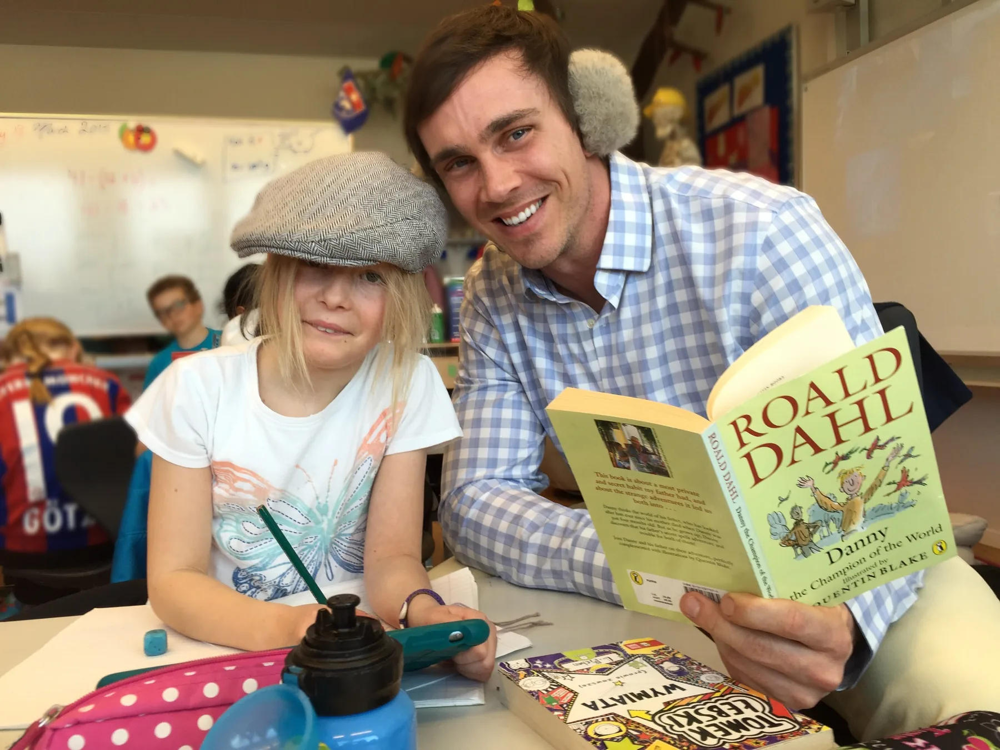
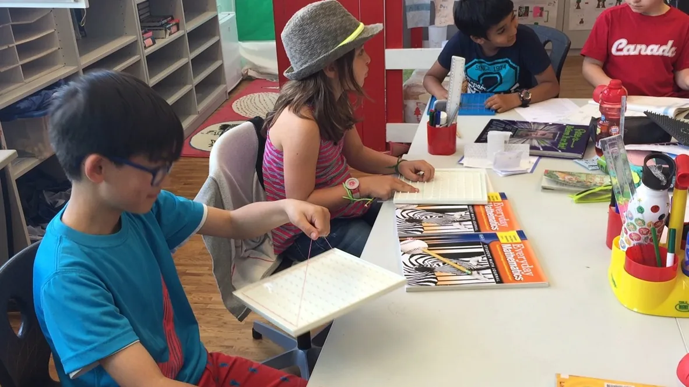

Leadership & educational philosophy
Lead with care.
Build with purpose.
I care about knowing pupils well, doing the work properly and helping colleagues create a school where young people want to be.
From leading mathematics curriculum work to mentoring students through sport, I've found that leadership often starts by getting involved.
Explore my approach
What matters most
Every child needs
someone in their corner.
Children know when an adult is really listening. They notice when you remember something they told you, or recognise that they're having a difficult day.
The teachers I remember most were often the ones who noticed when something was wrong, even before I knew how to ask for help. I try to be that kind of teacher.
That doesn't mean lowering expectations. It means knowing your pupils well enough to challenge them fairly, and being ready to change your approach when something isn't working.
I've held formal responsibilities, but some of my best work has come from putting my hand up when the school needed help.
Look beyond the behaviour and ask what's going on.
Listen carefully, then follow through.
Get the right people talking to each other.
Make decisions that will still help next term.
Leadership in practice / Pastoral
Being the adult
they can turn to.
I want pupils to feel that my classroom is somewhere they can have a go, make mistakes and ask for help.
One Grade 5 class stays with me. We had disagreements, adventures and plenty of laughter, but the pupils learned to look after one another. At the end of the year, they surprised me with a film of our time together. It ended with something I often said in class: “Don't be sad that it's over. Be happy that it happened.”
Years later, a former pupil returned, sat in his old desk and started talking about what was going on in his life. He was older, but he still knew he could come back and be heard.
That meant more to me than any formal recognition. I'd like every pupil to feel they have an adult they can return to.
Leadership in practice / UK boarding school
Put the child
before the problem.
When adults disagree about a pupil, someone has to bring the conversation back to what will actually help.
At Kingswood, I taught a Year 5 pupil who was warm and engaging but struggling badly with literacy. Several people were concerned, yet there wasn't a joined-up plan to help him.
I was new to the school, so I listened to the different views, got to know the pupil and his family, and worked with learning support to get everyone talking constructively.
With clearer communication and consistent support, he made meaningful progress. The important thing wasn't deciding who had been right before; it was agreeing what to do next.
I've carried that experience into other situations where adults need to work together in a child's interests.
Formal leadership / Two-year appointment
Building foundations
for future learning.
As Junior School Mathematics Coordinator for two years, I helped develop the curriculum while Rosenberg's Primary School was still finding its feet.
We wanted to combine the English National Curriculum with useful ideas from Singapore Mathematics and inquiry-based learning, without losing a clear progression into Middle and Senior School.
I mapped progression, worked with colleagues on assessment and delivered professional development on conceptual understanding and problem-solving.
I also coordinated mathematics assessment and helped plan intervention for pupils with gaps in their foundations. Teaching a lower-attaining Middle School set now reminds me every day why that work matters.

Coherent progression
A clear pathway from Primary to the next stage.
Professional learning
Sharing practical approaches with colleagues.
Assessment & intervention
Finding gaps early and teaching what pupils need next.
Leadership through expertise, not a management title
A community
built around wellbeing.
Some of the most rewarding parts of my work at Rosenberg began when the school needed someone to step in.
I taught ice skating from Primary through Senior School for two seasons, then helped develop opportunities for roller skating, rollerblading and even roller disco.
Later, I began working in the fitness centre alongside experienced strength and conditioning staff. I brought a teacher's perspective: understanding young people, building trust and making exercise accessible.
Some students come to me for more than exercise. Working with Heads of Boarding and departments, I help agree goals for students who need support with behaviour, confidence, motivation or belonging. I work with them in the gym, monitor how they're getting on and report back to colleagues. I've also led an INSET session on making better use of our outdoor fitness facilities.
For some boarders, the fitness centre has become a place to talk without the pressure of a classroom or office. That makes it a useful part of the school's pastoral support, not just a place to train.
At the end of one school year, a group of graduating students came to find me in the Primary School to say goodbye. Several told me that the fitness centre, and the people they met there, had helped them through difficult times. I haven't forgotten that.
The kind of leader
I strive to be.
I want to be a leader who's around, knows the pupils, supports colleagues and isn't afraid to change course when something isn't right.
I've enjoyed contributing across the school, and I'd like to bring that experience to a broader pastoral leadership role.